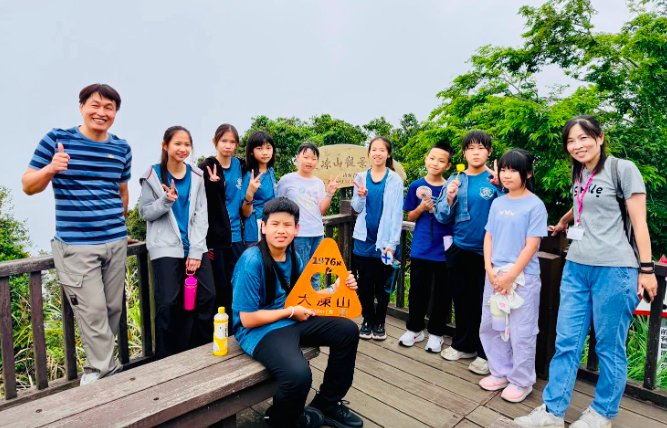

Our long-awaited inter-school exchange has begun! Early this morning, the Hsinmin String Ensemble and Flute Ensemble set off on a two-day learning journey, accompanied by the principal, directors, music teachers, the music director, and parent photographers. The trip was powered by the warm support of our parents — Parents' Association Chair Chen Zhi-qiang prepared breakfast, and Counselling Chair Ye Shou-wen and other parents packed snacks and supplies, sending the children off with warmth and the company of the whole Hsinmin family.
Our first stop was Dadong Mountain, one of Chiayi's famous “Little Yushan” peaks. The children hiked the forest trail through mountains and mist, encouraging one another up the slopes until they reached the viewing platform and its sweeping views — a real test of stamina and willpower. At noon we enjoyed lunchboxes in the nostalgic mountain town of Fenqihu, soaking up the Alishan railway culture.
In the afternoon we reached the striking white Cigu Salt Mountain in Tainan — and the highlight of the trip: a flash-mob performance. In front of the salt mountain, the String and Flute Ensembles played for the public. Even when a light rain began to fall, it could not dampen the children's passion to play and share their music. As the music rose, the children bravely took to a public stage and spoke to the world through music.
Heartfelt thanks to the Taiyen Cigu Salt Field team for their warm southern hospitality — treating teachers and children to popsicles and gifting two cases of water. This was more than a performance; it was a lesson that walked out of the classroom and into society. At Hsinmin, we meet a better version of ourselves. Tomorrow we head to Cigu Elementary School for the formal exchange — stay tuned!

期待已久的校際交流活動正式展開！今天一早，新民國小弦樂團、長笛團同學，在校長、主任、音樂老師、音樂總監以及隨隊攝影家長陪伴下，帶著興奮與期待，展開兩天一夜的學習旅程。🚌🌿
更令人感動的是，這趟旅程背後也有滿滿家長力量一路支持著孩子們。感謝陳志强家長會長一早貼心準備早餐，葉首彣輔導會長以及熱心家長們，也特別為孩子準備滿滿點心與補給。一句句叮嚀、一份份心意，讓孩子們帶著溫暖與幸福出發，也感受到新民大家庭最溫暖的陪伴。✨
第一站來到嘉義著名的小百岳——大凍山。孩子們沿著森林步道前進，在山林與雲霧間挑戰自我，也欣賞壯麗山景與自然奇岩。雖然山路上坡不易，但孩子們依然彼此扶持、互相鼓勵，一步一步勇敢向前。當成功登上觀景平台時，眼前遼闊美景讓大家充滿成就感！中午來到充滿懷舊氛圍的奮起湖老街，品嚐特色便當、漫步山城街道，感受阿里山鐵道文化與老街風情。🚂🏮
下午前往臺南著名景點七股鹽山。除了欣賞潔白壯觀的鹽山景色，今天更迎來此次旅程最特別的亮點——「鹽山音樂快閃演出」！新民弦樂團與長笛團的孩子們，在鹽山前以悠揚樂聲進行快閃演出。雖然天空一度飄起細雨，卻絲毫澆不熄孩子們想演奏、想分享音樂的熱情！那一刻，鹽山前不只是一次快閃演出，更是一群孩子勇敢站上公共舞台、用音樂與社會對話的美麗畫面。✨
感謝台鹽實業七股鹽場旅遊課與工作人員，不只宴請所有師長與孩子們享用冰棒，還送了兩箱礦泉水，充分展現南部道地的人情味。這不只是一次演出，更是一堂走出教室、走向社會的素養學習課程。明天將前往臺南市七股區七股國小進行正式校際交流，敬請期待！🌱在新民，遇見更好的自己。